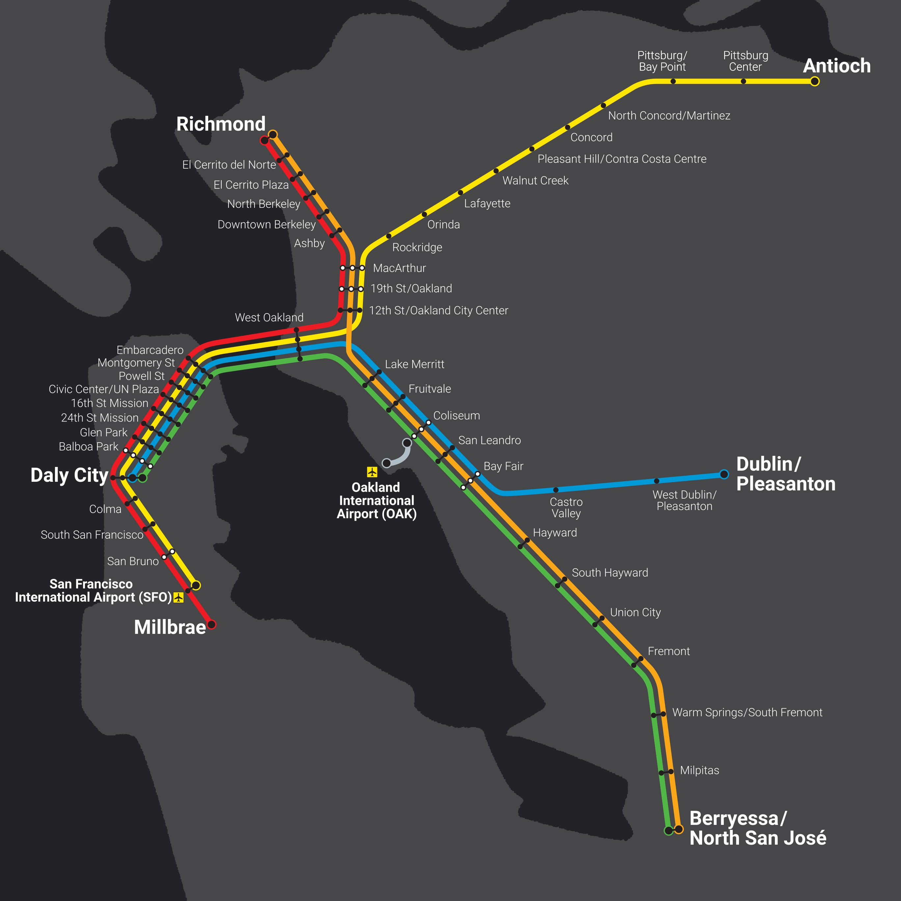
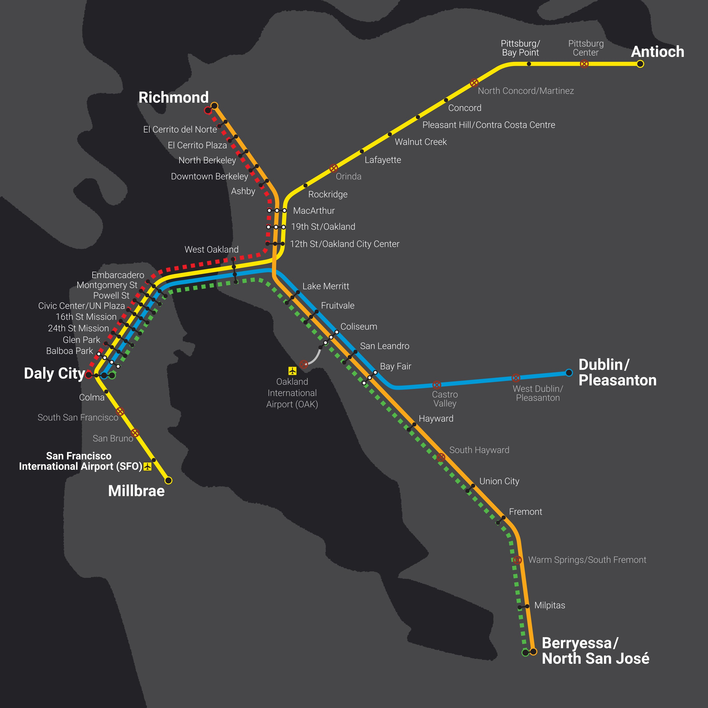
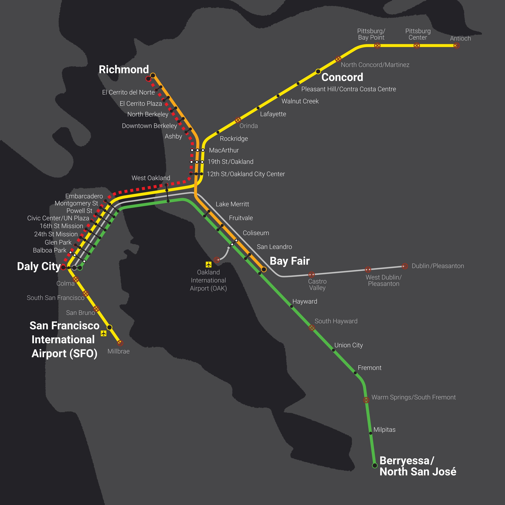
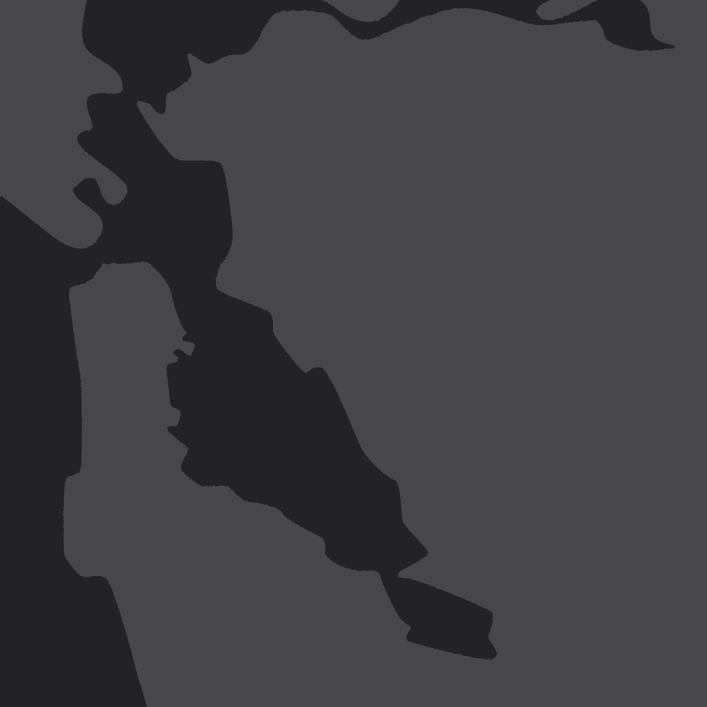
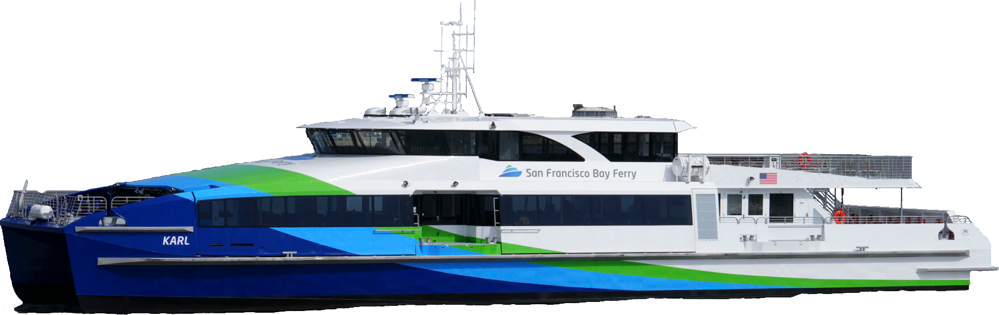

Current Service
BART currently operates 5 lines. The Red Line goes from Richmond to
Millbrae, the Orange Line from
Richmond to Berryessa, the Yellow Line from Antioch to SFO, the Green Line from Daly City to
Berryessa, and the Blue Line from Daly City to Dublin/Pleasanton.
Phase 1
If BART doesn't receive funding, it will be forced to make deep cuts. Phase 1 cuts include
reducing
the Red and Green lines to peak hours only,
decreasing train frequency to once per 30 minutes, stopping
service after 9 PM, and closing 10 stations. Phase 1 implementation would begin January
2027.[3]
Phase 2
In July 2027, Phase 2 would begin, shutting down Blue Line service,
stopping the Orange Line at Bay Fair and the Yellow
Line at Concord, and closing all stations south of Daly City except for SFO. BART
service
would resemble what is was 50 years ago and would be reduced by 70% from what it is
now.[4]
Phase 3
If BART continues to have negative revenue after Phase 2 cuts or cannot maintain compliance with
laws and regulations, Phase 3 will begin. Phase 3 would have BART use its remaining money to secure
its assets and completely end service,[5] leaving most of the Bay Area without rapid
transit.
This is:




A Bay Without BART
Elias Fretwell
While the whole Bay would feel the impact of losing BART, the effects won't be evenly distributed. Communities directly surrounding stations and large portions of San Francisco, Oakland, and Berkeley would be hit the hardest as they have the highest concentrations of people who rely on BART to get to and from work.[6]
Current Traffic[7]
The Bay Area's geography means that we have a lot of bridges and
tunnels, which restrict the flow of cars. This turns a 30 mile trip from central Contra Costa County to San Francisco take
over an hour, with major backups at the Caldecott Tunnel and Bay
Bridge. Traffic on I-80 often makes walking seem more appealing. Few
days go by where you don't hear of a backup at the Maze on the morning news. Moving 200,000 people
per day,[8] BART helps keep cars off the
highways, alleviates bottlenecks, and provides a congestion-free way to get around. Without it,
traffic would only get worse.
Additional Traffic[9]
If everyone who currently takes BART at peak hour instead drove, thousands of additional cars would
end up on the already-congested freeways, slowing down commutes and worsening air pollution and
climate change. Hardest hit would be the Bay Bridge, the only
reasonable connection between San Francisco and most of the East Bay; I-880, connecting southern Alameda County to the northern part and San
Francisco; and SR 24, the link between central and eastern Contra Costa
to the rest of the Bay.
Not Everyone Could Drive
People without a car need BART to get them around the region. BART provides a crucial service to the
half of its riders who don't have a car.[10]
■ Do Not Own a Car
■ Own a Car
■■■■■■■■■■
■■■■■■■■■■
■■■■■■■■■■
■■■■■■■■■■
■■■■■■■■■■
■■■■■■■■■■
■■■■■■■■■■
■■■■■■■■■■
■■■■■■■■■■
Each square represents approximately 12,000 riders each week.
What if Everyone Took Transit?
If everyone who rode BART made their trips on other forms of transit, the Bay's other transit
agencies would immediately be overwhelmed. Putting aside the fact that other agencies simply can't
replace BART service, doing that would require massive vehicle purchases and lots of training.
Meet Karl
Karl is one of two of the San Francisco Bay Ferry's new Dorado class ferries, which can hold
up to 320 people and cost $15 million each.[11] In order to move everyone traveling across the Bay
at peak hour, the San Francisco Bay Ferry would need 14 more Karls,[12] over half the size of its current
fleet and costing $210 million. These ferries would be at maximum capacity and would only get people
between Oakland and San Francisco, requiring buses to get people to their final destinations.

Meet the New Flyer XHE60
It doesn't have a fun name like Karl but it can hold up to 125 people and runs on
hydrogen.[13] It's a high-capacity
bus, but transit agencies would still need a lot of them to replace BART.
To move BART riders by bus at peak hour, Bay Area transit agencies would have to buy hundreds of buses. AC Transit would need the most, requiring 145 XHE60 or similar-capacity buses, followed by Muni (89), SamTrans (66), County Connection (23), Wheels (12), VTA (8), and Tri Delta Transit (6).[14]
Costly bus service
Running this replacement bus service would be expensive. AC Transit recently purchased 9 XHE60
buses for $20.3 million,[15]
putting the cost of one bus at $2.26 million and the total for AC Transit's 145 new buses at
$327.9 million, 80% of the agency's currently-budgeted $407.6 million FY2026 capital
budget.[16] AC Transit budgeted
$349.4 million for this fiscal year's bus-related expenses (operator salaries, vehicle parts and
maintenance, fuel, etc.)[17] and
ran 1.424 million bus-hours from July 1, 2025 to June 30, 2026.[18] AC Transit would need to run an additional
260,000 bus-hours each year,[19]
costing $67.5 million annually at its current bus-hour cost.
Existing transit weakened
Even without transit agencies having to work to move people that BART would have moved, their
service won't be as good without rapid rail connections. Around the region, 261 routes connect to
BART, covering a total of 3,100 miles, getting people to and from places where BART doesn't directly
go.[20] One in six BART trips starts
or ends with a connection from one of these routes.[21]
Lyft Bike*
Lyft Bike, the Bay Area's bikeshare system, operated by Lyft, has 770 bike rental spaces near BART
stations.[22] From July 1, 2025 to
June 30, 2026, 595,790 rides started or ended at these rental stations. These trips had a total
distance of over 860,000 miles,[23]
165,000 more miles than the crew of Artemis II traveled going around the Moon and more
than three times their farthest distance from Earth.[24] 59% of BART trips start or end with some form of
active transportation.[25]
*
Formerly Bay Wheels
■ Walk, Bike, Scooter
■ Transit, Shuttle, Private Vehicle
■■■■■■■■■■
■■■■■■■■■■
■■■■■■■■■■
■■■■■■■■■■
■■■■■■■■■■
■■■■■■■■■■
■■■■■■■■■■
■■■■■■■■■■
■■■■■■■■■■
Each square represents approximately 12,000 trips each week.
■ Social/Recreational/Shopping
■ Work/School
■ Other
■■■■■■■■■■
■■■■■■■■■■
■■■■■■■■■■
■■■■■■■■■■
■■■■■■■■■■
■■■■■■■■■■
■■■■■■■■■■
■■■■■■■■■■
■■■■■■■■■■
Each square represents approximately 12,000 trips each week.
Restaurants and shops
21% of all trips made by BART are are social, recreational, or involve shopping, including half
of all weekend trips.[26] BART
allows people to get out without having to worry about traffic or finding a parking spot and
adding more time to the meter. Over 2,140 restaurants[27] and 2,950 shops[28] are within ½ mile of a BART station.
BART's proximity to thousands of businesses and the number of people it moves to those places
make it an important part of the regional economy.
Start
End
■ Above Regional Median Annual Salary
■ Below Regional Median Annual Salary
■■■■■■■■■■■■■■■■■■■■■■■■■
■■■■■■■■■■■■■■■■■■■■■■■■■
■■■■■■■■■■■■■■■■■■■■■■■■■
■■■■■■■■■■■■■■■■■■■■■■■■■
■■■■■■■■■■■■■■■■■■■■■■■■■
■■■■■■■■■■■■■■■■■■■■■■■■■
■■■■■■■■■■■■■■■■■■■■■■■■■
■■■■■■■■■■■■■■■■■■■■■■■■■
■■■■■■■■■■■■■■■■■■■■■■■■■
■■■■■■■■■■■■■■■■■■■■■■■■■
■■■■■■■■■■■■■■■■■■■■■■■■■
■■■■■■■■■■■■■■■■■■■■■■■■■
■■■■■■■■■■■■■■■■■■■■■■■■■
■■■■■■■■■■■■■■■■■■■■■■■■■
Each square represents approximately 10 full-time BART employees.
BART Jobs
In addition to getting people to their jobs and supporting the Bay Area's economy, BART has 3,780
full-time employees, with a mean annual salary of $147,000. Half of these employees[29] make more than the regional
median annual salary of $137,000.[30]
This makes BART a large employer and one that provides high salaries to thousands of people.
That is:
A Bay Without BART
Without BART service, traffic would get worse, especially in places where it's already bad. Other transit agencies simply could not cover BART's service and would be diminished without being able to connect to fast long-distance service at BART stations. With more traffic and no alternative, more time would be lost commuting and more money would be spent on gas, and at a time when gas prices are stubbornly high. This would also mean less people shopping, eating out, and being out and about, reversing the rebound from COVID. As a major employer, BART shutting down would eliminate thousands of jobs, many of them high-paying.
When the Connect Bay Area Act comes to the ballot in November, consider if A Bay Without BART—thousands of more cars clogging the freeways, thousands of people unable to travel the Bay Area, thousands fewer jobs, and thousands fewer people enjoying our amazing weather, great food, and diverse shops—is worth saving a fraction of a percent in sales taxes.
References
- ^ "BART is Facing a Financial Deficit", Bay Area Rapid Transit, https://www.bart.gov/about/financials/crisis.
- ^ California State Legislature, Senate, Connect Bay Area Act, SB 63, https://calmatters.digitaldemocracy.org/bills/ca_202520260sb63.
- ^ BART, "San Francisco Bay Area Rapid Transit District Board Workshop 2026," February 12, 2026, https://www.bart.gov/sites/default/files/2026-02/[BART Board Workshop 02-12-2026] Presentations.pdf, 40.
- ^ BART, "San Francisco Bay Area Rapid Transit District Board Workshop 2026," 42.
- ^ BART, "San Francisco Bay Area Rapid Transit District Board Workshop 2026," 60.
- ^ U.S. Census Bureau; "Means of Transportation to Work," American Community Survey, ACS 1-Year Estimates Detailed Tables 2024, Table B08301; https://data.census.gov/table/ACSDT1Y2024.B08301.
- ^ California Department of Transportation, Annual Average Daily Traffic, 2026, distributed by ArcGIS, https://gisdata-caltrans.opendata.arcgis.com/datasets/d8833219913c44358f2a9a71bda57f76_0/about.
- ^ Bay Area Rapid Transit, "May 2026 Monthly Riderhsip Snapshot," June 10, 2026, https://www.bart.gov/sites/default/files/2026-06/202605 Monthly Ridership Snapshot.pdf.
- ^ Bay Area Rapid Transit, Hourly Ridership by Origin-Destination Pairs, 2025, https://afcweb.bart.gov/ridership/origin-destination/.
- ^ "2023-2024 Regional Transit Passenger Snapshot Survey," Metropolitan Transportation Commission, July 31, 2025, https://public.tableau.com/shared/W2Z7CGP9J.
- ^ "Meet Our Fleet," San Francisco Bay Ferry, last modified June 6, 2026, https://sanfranciscobayferry.com/meet-our-fleet/.
- ^ Bay Area Rapid Transit, Hourly Ridership.
- ^ "Xcelsior Charge FC™," New Flyer, August 21, 2023, https://www.newflyer.com/site-content/uploads/2023/08/Xcelsior-CHARGE-FC.pdf.
- ^ Bay Area Rapid Transit, Hourly Ridership.
- ^ Alameda-Contra Costa Transit District, Adopted Budget Fiscal Year 2025-26, 54, 2025, https://www.actransit.org/sites/default/files/2025-10/FY2025-26%20District%20Adopted%20Budget%20Book.pdf.
- ^ Alameda-Contra Costa Transit District, Adopted Budget Fiscal Year 2025-26, 55.
- ^ Alameda-Contra Costa Transit District, Adopted Budget Fiscal Year 2025-26, 132-135.
- ^ AC Transit, Alameda-Contra Costa Transit District Feed Versions, 2026, distributed by Transitland, https://www.transit.land/feeds/f-9q9-actransit.
- ^ Bay Area Rapid Transit, Hourly Ridership.
- ^ Regional Feed, 2026, distributed by 511, http://api.511.org/transit/datafeeds?operator_id=RG.
- ^ Preliminary BART Station Profile Study, 35, RSG, August 2025, https://mtcdrive.app.box.com/v/onboard-survey-reports/file/2097328513809.
- ^ Station Information, 2026, distributed by Lyft, https://gbfs.lyft.com/gbfs/2.3/bay/en/station_information.json.
- ^ Bay Wheels Trip History, 2025-2026, distributed by Lyft, https://s3.amazonaws.com/baywheels-data/index.html.
- ^ "NASA Welcomes Record-Setting Artemis II Moonfarers Back to Earth," NASA, April 10, 2026, https://www.nasa.gov/news-release/nasa-welcomes-record-setting-artemis-ii-moonfarers-back-to-earth/.
- ^ Preliminary BART Station Profile Study, 35.
- ^ "2023-2024 Regional Transit Passenger Snapshot Survey," Metropolitan Transportation Commission, July 31, 2025, https://public.tableau.com/shared/DYC8J3KT4.
- ^ OpenStreetMap contributors, Planet Dump, accessed July 28, 2026, distributed by Overpass Turbo, https://overpass-turbo.eu/s/2wsd.
- ^ OpenStreetMap contributors, Planet Dump, accessed July 28, 2026, distributed by Overpass Turbo, https://overpass-turbo.eu/s/2wse.
- ^ San Francisco Bay Area Rapid Transit District, 2024, distributed by California State Controller, https://gcc.sco.ca.gov/Reports/SpecialDistricts/SpecialDistrict.aspx?entityid=3396&year=2024.
- ^ "Income - Vital Signs," Metropolitan Transportation Commission, last modified March 2026, https://vitalsigns.mtc.ca.gov/indicators/income.
Methodology
Communities
I calculated the number of BART commuters as the number of people whose method of transportation to work
is "subway" from the Census Bureau's "Means of Transportation to Work" table (B08301). The Census
tabulates light rail (Muni and VTA) and commuter rail (ACE, Caltrain, Capitol Corridor, and SMART)
separately, so BART is the only system in the Bay Area counted as a subway.
Traffic
I found the peak hour for every station pair as well as the shortest route by highway between them. I
summed the count of people for each direction on each segment (created by splitting highway lines by the
Voronoi polygons of CalTrans' traffic data
points) to get the total additional people on each segment. I divided the total number of people by the
average amount of people in a car commuting to/from work (1.1989865285540593, calculated from the Census
Bureau's "Means of Transportation to Work" table). Comparing this calculated number to the current peak
hour car count yields the percent increase in traffic.
Replacement
To calculate the number of ferries needed, I found the total number of transbay trips during peak hour
in a single direction, divided that by ferry capacity, then divided that by two, since each ferry can
make two trips back and forth in an hour. To calculate the number of buses needed, I grouped every
station by the primary transit agency serving them, then for each pair of stations I added that pair's
ridership to a ridership sum for each agency that trip would use. For example, if an average of 100
people take BART between San Bruno and Pittsburg/Bay Point at peak hour would add 100 people to the
counts for SamTrans, Muni, AC Transit, County Connection, and Tri Delta Transit.
Connecting Routes
To generate the list of connectiong routes, I found all stops within 500 feet (approximately two blocks)
of a BART station and matched those to the routes that serve them. The total length is calculated from
the GTFS shapes.txt file.
Lyft Bike
To calculate the number of bike rides, I counted the trips starting within 500 feet of a BART station.
To approximate the length of each trip, I calculated the length of the legs of the right triangle
connecting the start and end point. This overestimates the distance when the actual route taken involved
segments at an angle to the latitude/longitude grid, such as from Market and Castro to the Ferry
Building, and underestimates the distance when the route taken involves curved segment, such as across
the UC Berkeley campus, or when the route involves multiple turns, such as the Wiggle.
Restaurants and Shops
Data for locations comes from OpenStreetMap via Overpass Turbo. I counted any element with an amenity attribute of bar, biergarten,
cafe, ice_cream, or restaurant as a restaurant and anything with the shop attribute as a shop. The queries for
restaurants and shops are below, run on a bounding box encompassing the full BART service area.
(
node[amenity=restaurant]({{bbox}});
way[amenity=restaurant]({{bbox}});
node[amenity=ice_cream]({{bbox}});
way[amenity=ice_cream]({{bbox}});
node[amenity=bar]({{bbox}});
way[amenity=bar]({{bbox}});
node[amenity=biergarten]({{bbox}});
way[amenity=biergarten]({{bbox}});
node[amenity=cafe]({{bbox}});
way[amenity=cafe]({{bbox}});
);
out center;
(
node[shop]({{bbox}});
way[shop]({{bbox}});
);
out center;
Jobs
I counted full-time employees as any employee whose total wages were greater than or equal to their
minimum salary.
AI Disclosure
I used OpenAI's GPT-5.5 Instant to organize over 500 unique BART position names into 13 categories. No AI was used in the gathering or processing of data nor in the writing of this article. The categories and their respective positions can be found in scripts/employment.py.